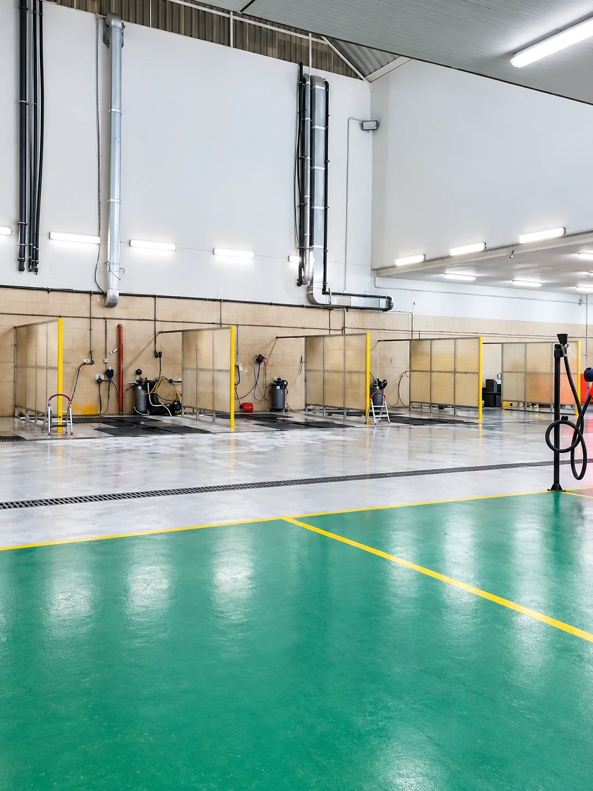

محطة متكاملة في البطين
كل ما تحتاجه لسيارتك في مكان واحد
محطة البطين لخدمة السيارات في العين تجمع بين غسيل السيارات وخدمات السيارات الأساسية في موقع واحد. من الغسيل والعناية بالسيارة إلى الميزان الإلكتروني وتغيير الزيوت والإطارات والبطاريات وخدمات أخرى تساعدك على إنجاز احتياجات سيارتك بسهولة.

الخدمات الرئيسية
خدمات حقيقية داخل نفس المحطة.
صور من موقع محطة البطين نفسه لتوضيح أهم الخدمات المتاحة.
الخدمة الرئيسية
مغسلة سيارات داخل محطة متكاملة
المغسلة هي الخدمة الأبرز في محطة البطين، مع مساحات غسيل حقيقية وعناية متعددة المراحل. وفي نفس الموقع تتوفر أيضاً خدمات سيارات أساسية مثل تغيير الزيت والإطارات والبطاريات والميزان الإلكتروني.
- غسيل يدوي
- أربع مراحل للعناية
- Wash & Wax
- خدمات سيارات في نفس الموقع


الصيانة الدورية
تغيير الزيوت وخدمات السيارات
تتوفر في المحطة خدمات تغيير الزيوت إلى جانب مجموعة من خدمات السيارات الأساسية والمنتجات المرتبطة بالصيانة الدورية.
الصور توضح منتجات موجودة وقت التصوير، وقد يختلف توفر المنتجات بمرور الوقت.
خدمات السيارات
عناية إضافية أثناء الغسيل
غسيل بصابون واكس
نستخدم في الغسيل صابون Wash & Wax برغوة غنية تساعد على تنظيف الأوساخ والعناية بسطح السيارة، مع لمعة أفضل وطبقة عناية خفيفة أثناء عملية الغسيل.
- رغوة غنية
- تنظيف فعال
- لمعة أفضل
- عناية إضافية بسطح السيارة
الموقع الحقيقي
من داخل محطة البطين.
صور حقيقية من المغسلة وقسم الميزان والزيوت والإطارات وموقع المحطة.

جاهز تزورنا؟